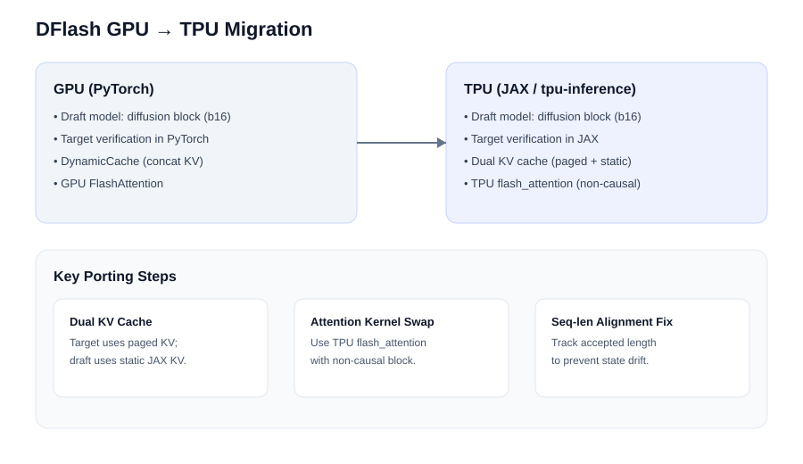

Toward Accelerated LLM Inference: Porting and Evaluating Diffusion-Based Speculative Decoding on TPU
Autoregressive decoding is inherently sequential: generating n tokens requires n target-model forward passes.
We port DFlash—a diffusion-based speculative decoding method that drafts a whole 16-token block in a single parallel forward pass—from GPU/PyTorch to TPU/JAX within the
vLLM TPU inference stack (tpu-inference).
Benchmarked on Qwen3-4B across 9 datasets (math, code, chat) on TPU V5P.
Team Members
Advisors
Problem and Motivation
The Decoding Bottleneck
LLM inference consists of two stages with very different computational profiles. Prefilling processes the entire input prompt in a single forward pass—all tokens are known in advance, so the computation is fully parallelizable across the prompt length, similar to training. Decoding, however, is inherently sequential: each new token depends on the one generated before it. Latency grows linearly with output length, making decoding the dominant bottleneck for long-form tasks like chain-of-thought reasoning (500–2000 tokens) and code generation (200–1000 tokens).
Speculative Decoding
Since full parallelization is fundamentally incompatible with autoregressive decoding, acceleration techniques must relax the sequential dependency in controlled ways. Speculative decoding does this by having a lightweight draft model propose a sequence of candidate tokens, then having the full target model verify them all in a single batched forward pass. If the draft is good, multiple tokens are accepted per verification step, reducing the number of expensive target-model calls. In the worst case (first token rejected), it degenerates to standard decoding with negligible overhead.
Our Contribution
We port DFlash—a diffusion-based speculative decoding method—from GPU/PyTorch to TPU/JAX inside the tpu-inference runtime.
We evaluate performance in both standalone loops (isolating model compute) and the full vLLM serving pipeline (including scheduling, KV cache management, and rejection sampling).
We compare against Eagle3 (an autoregressive drafter) and verify that output quality is preserved.
TPUs are uniquely suited to this approach: their matrix-unit (MXU) architecture favors large, dense, data-parallel operations—exactly the pattern DFlash uses when predicting a 16-token block in one pass. Critically, TPU verification cost is flat from K=16 to K=128 (0.97×), while GPU verification scales to 2.3× at longer contexts. This means DFlash + TPU is the only combination where both draft and verification costs remain constant as block size grows, opening the door to much wider draft blocks than are practical on GPU.
Background
Speculative Decoding
Speculative decoding introduces parallelism into the decoding stage by using a fast, cheap draft model to propose a sequence of n candidate tokens, then having the full target model verify all candidates in a single batched forward pass. At each position, the draft token is checked against the target model’s distribution using a rejection-sampling rule. Verification proceeds from position 1 onward: the first rejected token causes all remaining drafts to be discarded, and the target model samples from its own distribution at that position.
In the worst case (first draft token rejected), speculative decoding degenerates to standard decoding with negligible additional cost. In typical cases, multiple tokens are accepted per target-model call, reducing average latency while preserving the exact output distribution. The key metric is τ (average acceptance length)—how many draft tokens are accepted per verification step. Higher τ means more tokens generated per expensive target-model forward pass.
Draft Model Approaches
Draft models span a wide range of speed–quality tradeoffs:
- N-gram drafting: non-neural and extremely fast, but provides a poor approximation of the target distribution, yielding low acceptance rates and limited speedup.
- Eagle3: a small one-layer transformer that reuses target-model context (hidden states and last-token embeddings). Produces much better drafts but remains autoregressive—each draft token depends on the previous one, requiring O(k) sequential forward passes for k draft tokens. This sequential proposal cost grows linearly with block size.
- Large diffusion models: explored as drafters, but their memory footprint outweighs latency benefits. Small diffusion models tend to produce drafts that poorly align with the target distribution.
DFlash Architecture
DFlash replaces sequential drafting with a diffusion-style block drafter that predicts an entire fixed-size token block (16 tokens) in a single forward pass using non-causal attention. The draft model is not a full language model—it has no embedding layer or LM head of its own. It consists of a small transformer stack (4 decoder layers) with a custom attention pattern, and it reuses the target model’s embedding and LM head for both input and output.
Input: The block of positions to be predicted is represented as token IDs (including mask placeholders for unknown future positions), passed through the target model’s embedding layer. Additionally, the draft receives target hidden states from a subset of the target model’s layers (layers [1, 9, 17, 25, 33] for Qwen3-4B), which are concatenated and projected via an FC layer + RMSNorm. This projected vector conditions the draft on what the target “thinks” at the current position.
Attention: Each DFlash decoder layer uses a custom attention mechanism where queries come from the block, while keys and values come from both the target context and the block. Crucially, attention is non-causal within the block: all positions attend to each other bidirectionally. At K=16, each position sees 15 neighbors; at K=128, each position would see 127 neighbors—providing fundamentally richer conditioning than autoregressive drafters, which can only see past positions.
Output: The block of hidden states produced by the draft is fed into the target model’s LM head to obtain logits. The draft model never has its own vocabulary projection—it always uses the target’s, ensuring draft proposals and target verification share the same vocabulary space. This design reduces draft cost from O(k) to O(1) while remaining expressive enough to achieve high acceptance rates. Trained on just 289K samples, DFlash outperforms Eagle3 (trained on 1.4M samples) in inference acceleration.
Methods: GPU → TPU Migration

Key Engineering Steps
-
Dual KV cache architecture: The GPU reference uses
DynamicCachewith KV concatenation. On TPU, paged KV (vLLM PagedAttention) serves the target model, while the draft model uses a separate static JAX KV cache withdynamic_update_slice, matching the GPU architecture’s per-layer static caches. The KV cache manager was extended to allocatedraft_layer.{i}specs for all draft layers instead of hardcoding a single layer (as was done for Eagle3). -
Non-causal attention kernel: DFlash’s draft attention is explicitly
is_causal=False—all block positions attend to each other bidirectionally. This was the main parity risk: the existing TPU decode path was optimized around causal ragged paged attention. We route draft layers through TPUflash_attentionwithcausal=False, while keeping the target model on ragged paged causal attention. The reference uses token-axis K/V concatenation (not additive fusion), which we match exactly. -
Sequence-length inflation fix: We discovered that
attn_metadata.seq_lensincluded unverified draft tokens (~15 phantom tokens per step), corrupting the proposer’s context buffer, KV cache positions, and RoPE embeddings. Each decode step inflated the sequence length by the full draft block size rather than the accepted count, causing positional encoding drift and stale context. Fixing this single bug by usingnum_tokens_no_spec(the actual accepted count) nearly doubled performance: τ jumped from 2.49 to 4.48, speedup from 1.30× to 2.31×. - Target hidden-state extraction: An auxiliary capture path was added to the Qwen3 target model. Hidden states from layers [1, 9, 17, 25, 33] are concatenated along the feature dimension, projected via an FC layer + RMSNorm, and passed to the draft model as contextual conditioning. The layer selection follows the DFlash checkpoint configuration and is deterministic.
-
Method registration & dispatch: DFlash was integrated using the same pattern as Eagle3: a new
"dflash"method branch intpu_runner.py, aDFlashProposerclass underspec_decode/jax/, and dispatch routing inspeculative_decoding_manager.py. Compilation prewarm support and precompile helpers were extended for thedflashpath.
The implementation preserves the full DFlash contract: extract target hidden-state features, run a lightweight 4-layer block drafter with non-causal attention, reuse the target’s embedding layer and LM head for logits, then verify the full 16-token draft block in one target forward pass.
It adds zero new vLLM dependencies—DFlash runs entirely within the tpu-inference runtime.
Rejection and acceptance are handled centrally by the existing rejection sampler; the proposer only returns draft token IDs for active requests.
Results
We benchmark Qwen3-4B (target) + DFlash-b16 (draft) across 9 datasets spanning math, code, and chat tasks on TPU V5P (4 chips). The standalone loop achieves an overall 3.01× speedup with τ = 5.42, reaching 3.72× on math benchmarks (τ = 6.71). Math tasks see the highest acceptance because reasoning chains are more predictable for the drafter; chat tasks (1.96×) show lower τ due to higher entropy. On math benchmarks where GPU comparison data is available, TPU achieves 94.9% of GPU paper τ, and exceeds GPU on Math500 (τ = 8.80 vs 7.84).
In the full vLLM serving pipeline (with scheduling, batch management, and rejection sampling), DFlash achieves 2.31× speedup at τ = 4.48. The gap between standalone and pipeline τ (6.67 vs 4.48) comes from vLLM orchestration overhead, not model compute. Output mismatches (bf16 floating-point divergence in batch-16 verify vs single-token baseline) do not indicate correctness loss.
Additional Findings
Inference Demo
Pick a dataset prompt and compare decoded outputs and throughput across baseline decoding, DFlash (GPU/TPU), and Eagle3.
Scroll down to load replay samples…
Conclusion
We demonstrate that diffusion-based speculative decoding transfers effectively to TPU. The DFlash port achieves 94% of GPU draft quality (τ=6.67 standalone, 94.9% of GPU paper τ on math benchmarks) and delivers meaningful acceleration in both standalone (3.01×) and serving-pipeline (2.31×) settings. Output quality is preserved: token mismatches arise from bf16 floating-point divergence in batch verification, not correctness errors, and final answers match on math benchmarks.
Key Findings
Step Profiling — GSM8K on TPU V4
Time breakdown of a single speculative decoding step: where the compute actually goes.
Under sync-barrier measurement, core compute (draft forward + verify forward) accounts for only 17.2% of total step time. The remaining 82.8% appears as overhead, but this is misleading: JAX’s lazy evaluation already pipelines host-device operations well.
The real bottleneck is vLLM orchestration: the rejection-sampling loop, request scheduling, and KV cache management. Verification alone consumes 59% of step time, with the two LM-head matmuls (draft logits + verify logits) at ~30%.
This profile directly motivates two Future Work items: (1) optimizing the vLLM scheduling path to close the standalone–pipeline τ gap, and (2) approximate or fused LM-head approaches to reduce the 30% matmul overhead.
Speculative Methods Compared
DFlash standalone vs DFlash vLLM pipeline vs Eagle3: speedup comparison on math benchmarks (TPU V4).
Three speculative decoding configurations are compared on math benchmarks using TPU V4. DFlash standalone runs the draft-verify loop without vLLM overhead; DFlash pipeline runs inside the full vLLM serving stack; Eagle3 is an autoregressive drafter baseline.
The standalone–pipeline gap (τ 6.67 vs 4.48) quantifies vLLM orchestration cost. Eagle3’s lower speedup comes from its O(k) sequential drafting: 16 draft tokens require 16 serial forward passes vs DFlash’s single pass.
Despite Eagle3’s competitive acceptance rates (it was trained on 1.4M samples vs DFlash’s 289K), its sequential proposal bottleneck limits throughput. This demonstrates that proposal speed, not just draft quality, determines end-to-end speculative decoding performance.
- Pipeline overhead dominates the standalone–pipeline gap: profiling shows that 82.8% of step time appears as overhead under sync-barrier measurement, but JAX’s lazy evaluation already pipelines operations well. The real bottleneck is vLLM orchestration (scheduling, rejection sampling loop), not host-device transfers. Verification alone accounts for 59% of step time; the two LM head matmuls account for ~30%.
- TPU verification cost is flat: verification cost ratio at K=128/K=16 is 0.97× on TPU at all context lengths tested (L=64–1024), compared to ~2.3× on GPU at L=1024. The entire hardware contrast lives in attention handling—FFN is memory-bandwidth-bound and flat on both hardware (GPU FFN: 1.09×, TPU FFN: 0.95×). TPU’s paged attention kernel (RPA v3) and systolic pipeline absorb attention compute within the weight-loading window.
- Diffusion + TPU intersection: only the combination of diffusion drafting (O(1) draft cost regardless of block size) and TPU (flat verification) makes larger block sizes (K>16) viable. An autoregressive drafter at K=128 requires 8× sequential passes on either hardware. GPU DFlash draft cost is 1.22× at K=128 (near-flat), but GPU verification attention scales to 2.51× at L=1024. Neither alone is sufficient; only the bottom-right cell of the 2×2 matrix (diffusion + TPU) keeps both sides flat.
- TPU advantage grows with context length: GPU verification penalty at K=128 grows from ~1.08× (L=64) to ~2.3× (L=1024). Speculative decoding benefits the most on long-generation tasks (chain-of-thought, code generation)—exactly where the TPU advantage is strongest.
- Iterative refinement does not help: replacing mask tokens with predicted tokens for refinement passes degrades τ from 6.18 to ~2.5, because the model was trained on mask-token inputs and sees predicted tokens as out-of-distribution.
Hardware Generations
DFlash Speedup: TPU V4 vs V5P
Speedup comparison across TPU generations: V4 vs V5P on matching benchmarks.
V5P’s autoregressive baseline is 1.69× faster than V4, meaning V5P starts from a higher throughput floor. DFlash speedup ratios appear slightly lower on V5P because the same absolute tok/s improvement yields a smaller ratio against a faster baseline.
However, absolute DFlash TPS on V5P is higher across all benchmarks. For capacity planning, absolute throughput matters more than the ratio—V5P DFlash serves more tokens per second than V4 DFlash on every dataset.
The τ values are similar across generations (same draft model checkpoint, same attention pattern), confirming that draft quality is a property of the model, not the hardware. The throughput difference comes from V5P’s faster MXU and HBM bandwidth.
Cost Efficiency — TPU vs GPU
Cost per million tokens at GCP on-demand pricing: V5P $2.10/hr, V4 $3.22/hr, GPU A100 ~$5.07/hr.
Each bar shows the dollar cost to generate one million tokens on that hardware, calculated as: (price_per_hour / tokens_per_second) × (1,000,000 / 3600). Lower bars mean more cost-effective inference.
TPU V5P with DFlash is the most cost-efficient option across all benchmarks. Although V5P’s on-demand price ($2.10/hr per chip) is lower than V4 ($3.22/hr) and GPU A100 ($5.07/hr), the cost advantage is amplified by DFlash’s throughput boost: higher tok/s at lower $/hr compounds into dramatically lower $/Mtok.
The dashed line shows the average V5P cost across benchmarks. Math benchmarks achieve the lowest cost because their high τ translates to the highest DFlash throughput. Chat benchmarks are more expensive per token but still cheaper than GPU baseline on any task.
Note: prices are GCP on-demand and don’t reflect committed-use discounts, spot pricing, or reserved capacity, which would further favor TPU (Google offers deeper discounts on its own hardware).
Future Work
- Wider block sizes (K=64, K=128): TPU’s flat verification cost enables training DFlash drafters at larger block sizes. Our measurements show both draft and verify cost remain flat through K=128 on TPU (draft: 0.95×, verify: 0.97×). At K=128, each draft position sees 127 bidirectional neighbors versus only 15 at K=16, providing fundamentally richer conditioning—an advantage exclusive to diffusion-style parallel drafters. No published work has trained a target-conditioned block-diffusion drafter at K≥64; this fills a key gap in the literature.
- vLLM pipeline optimization: the τ gap between standalone (6.67) and pipeline (4.48) stems from vLLM orchestration overhead (scheduling, rejection sampling loop), not model compute. Instrumenting and optimizing
speculative_decoding_manager.py’s scheduling path could recover a significant portion of this gap. - LM head optimization: the two LM head matmuls (draft logits + verify logits) account for ~30% of step time. Approximate or fused approaches such as top-k projection could reduce this cost substantially.
- Context-position τ correlation: preliminary analysis suggests acceptance rate may improve as generation progresses (more KV context → better drafter conditioning). If confirmed, this would be a compounding advantage: longer conversations yield both better τ and no additional verification cost on TPU.
- K-ceiling characterization: the flat region has been measured through K=256 (1.02×). Extending measurements to K=512 and K=1024 would characterize where the memory-bandwidth-bound regime transitions to compute-bound, establishing the full design space for wider drafters.
- Upstream contribution: the implementation requires zero vLLM changes and is ready for a
tpu-inferencePR. A small 10-line vLLM change would enablevllm serve --speculative-method dflash.